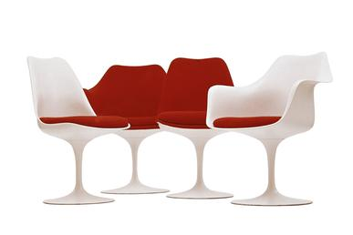
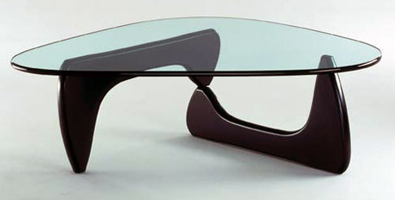
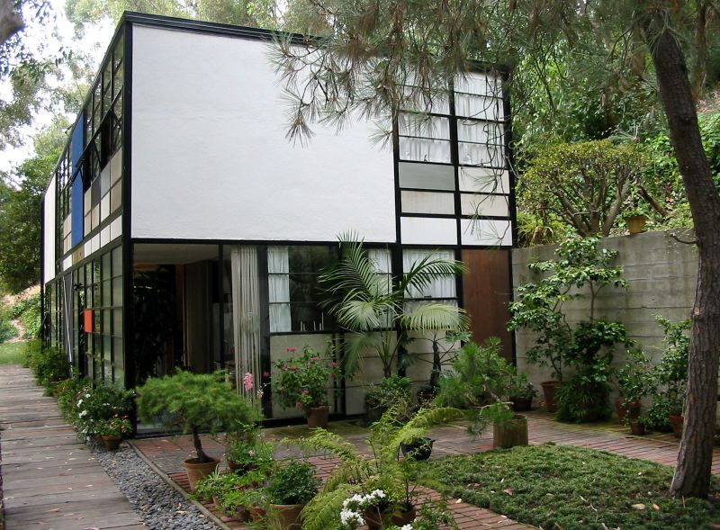
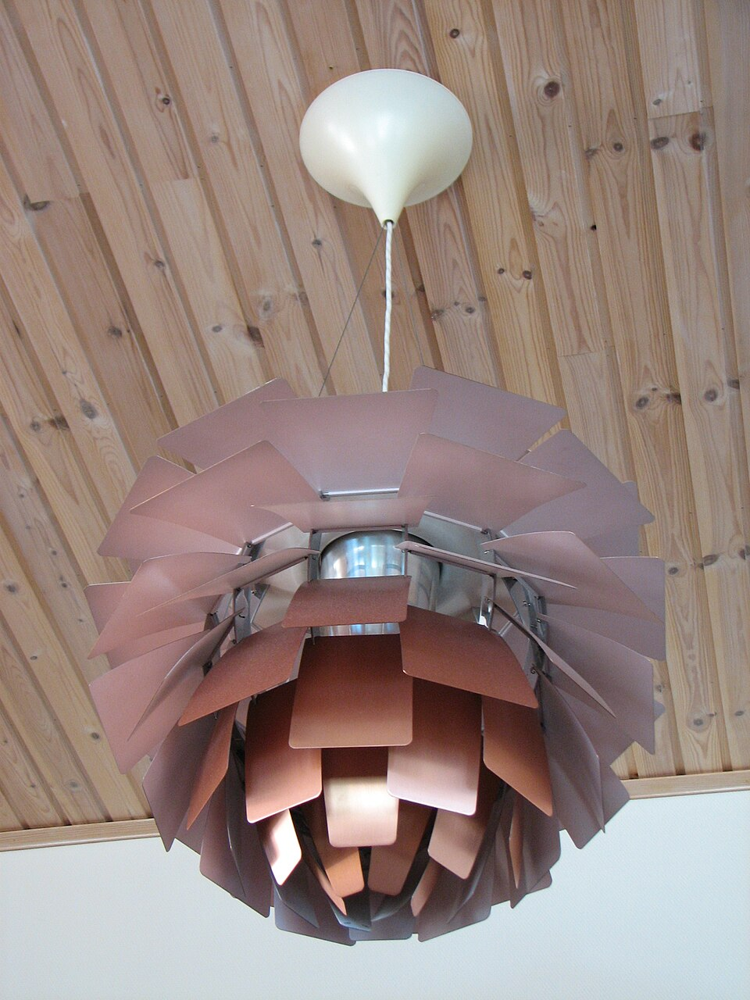

The World That Made Mid-Century Modern

A New World After the War
Mid-Century Modern emerged from the collision of wartime technology and postwar optimism. World War II had driven massive advances in materials science — molded plywood for leg splints, fiberglass for radar domes, aluminum for aircraft — and a generation of designers saw the opportunity to turn military innovation into affordable, beautiful objects for everyday life.
The GI Bill sent millions to college and into new suburban homes. Levittown and its imitators created vast demand for furniture, and manufacturers like Herman Miller and Knoll realized that modern design could be mass-produced without sacrificing quality. For the first time, "good design" was not just for the wealthy — it was a democratic project.
Defining Characteristics
Organic forms: gentle curves, biomorphic shapes inspired by nature rather than rigid geometry. Clean lines: minimal ornamentation, honest expression of materials and structure. New materials: molded plywood, fiberglass, bent wire, plate glass — industrial processes made graceful. Indoor-outdoor connection: floor-to-ceiling glass, open plans, flat or low-slope roofs that blur the boundary between house and landscape. Democratic ideals: the conviction that good design should be accessible and affordable, not exclusive.
Mid-Century Modern designers believed wartime technology could improve everyday life. Today, technologies like AI, 3D printing, and carbon fiber composites are emerging from specialized fields. Which of these do you think has the most potential to transform domestic design — and why?
Image Gallery




These works span furniture, lighting, and architecture, yet share a visual language. What connects them? Look for organic curves, honest materials, and the interplay of industrial process with warmth. How does each piece balance function and sculptural form?
The People of Mid-Century Modern
The most influential design partnership of the 20th century. Pioneered molded plywood and fiberglass furniture, designed the Eames House, and produced over 100 short films. Their philosophy: "The best for the most for the least."
Son of Eliel Saarinen. Sought a single expressive form for each project — the swooping TWA Terminal, the soaring Gateway Arch, the pedestal-base Tulip series. Died at 51 with major commissions still under construction.
Last Bauhaus director, emigrated to Chicago in 1938. His maxim "Less is more" defined postwar architectural minimalism. Perfected the steel-and-glass curtain wall in buildings of austere precision.
Bridged sculpture and design, East and West. His biomorphic coffee table (1947) is an icon. Also designed Akari light sculptures inspired by Japanese paper lanterns, playgrounds, and large-scale public gardens.
Denmark's leading modernist. The Ant Chair (1952) — bent plywood on slender steel legs — sold in the millions. His SAS Royal Hotel (1960) was a total design project: building, furniture, cutlery, textiles, even the door handles.
Transformed Knoll Associates into the leading modern furniture company and invented the modern corporate interior. Her "paste-up" planning method and "the meat and potatoes" approach to fill pieces created cohesive office environments.
Designed over 500 chairs and is considered the master of the Danish Modern chair. His Wishbone Chair (1949) and "The Chair" (1949) — which appeared on the Kennedy-Nixon debate stage — exemplify sculptural simplicity in wood.
As Herman Miller's design director from 1945, he recruited Eames and Noguchi and shaped the company's identity. His own designs — the Ball Clock, Bubble Lamps, Marshmallow Sofa — are playful, witty, and inventive.
Pioneered bent birch plywood furniture and a humanist modernism that favored natural materials and organic forms over steel and glass. Founded Artek (1935) to produce and sell his designs. His architecture balanced functionalism with warmth.
Herman Miller's textile director, bringing bold color and pattern to mid-century interiors. His folk-art-inspired designs added warmth and personality to the movement's clean-lined furniture. Also designed the legendary La Fonda del Sol restaurant.
What Made It "Mid-Century Modern"
Mid-Century Modern was never a single manifesto. It was a convergence of ideas — Bauhaus functionalism softened by Scandinavian warmth, American optimism channeled through industrial processes, and an overriding belief that design shapes how people live. These principles animated the movement across furniture, architecture, graphics, and interiors.
Where the Bauhaus favored geometric purity, MCM designers softened modernism with curves drawn from nature — the shell of a chair echoing an egg, a table base like a tree trunk, a lamp like a cocoon. Eero Saarinen, Isamu Noguchi, and Alvar Aalto led this shift.
The Eameses' credo. Mass production wasn't a compromise — it was the point. Molded plywood and fiberglass made great design affordable. Herman Miller and Knoll brought modern furniture to offices and middle-class homes, not just museums.
Floor-to-ceiling glass, post-and-beam construction, flat roofs, and open floor plans dissolved the barrier between interior and landscape. The Case Study Houses in Los Angeles were the laboratory. Richard Neutra's and Craig Ellwood's houses made the garden part of the living room.
Danish, Finnish, and Swedish designers — Wegner, Jacobsen, Aalto, Juhl — insisted on natural materials (teak, oak, birch), handcraft traditions, and human comfort. Their work softened International Style austerity and became hugely popular in postwar America.
Like Art Nouveau's Gesamtkunstwerk, MCM designers often controlled every detail. Saarinen designed the TWA Terminal's furniture and signage. Jacobsen designed the SAS Hotel down to the cutlery. Florence Knoll planned entire corporate environments as unified compositions.
Sponsored by Arts & Architecture magazine, 36 prototype homes by leading architects (Eames, Ellwood, Koenig, Neutra, Saarinen) demonstrated that modern, affordable, well-designed housing was possible using industrial materials. Case Study House #22 (Stahl House) became a symbol of the California dream.
Mid-Century Modern championed "democratic design" — good design for everyone. IKEA later took this idea even further. Do you think mass-production inevitably dilutes design quality, or can it genuinely deliver on the promise of beauty and function for all? What examples support your view?
Match the Designer to Their Work
Click a designer on the left, then click their work on the right. Correct matches will lock in place.
Match the Material to Its Innovation
Click a material on the left, then its mid-century application on the right.